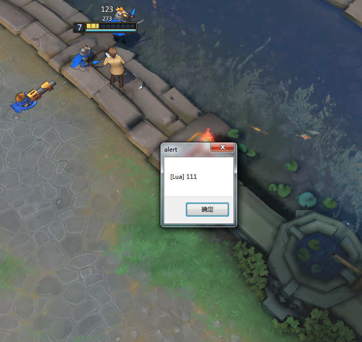

查看日志
使用 utils.debugf(debug_string) 可以打印日志信息。
日志信息可以使用工具 DebugView.exe 来查看

弹框测试可以使用 common.MessageBox(debug_string) ：

一些常用的功能被封装到了 CustomUI/Gaming/Script/common 中，主要包括：
技能（物品）绑定到控件
如果需要显示一个技能按钮，只需要修改 config.lua 中的 table config.spell_slot_bindings 即可。
config.spell_slot_bindings[技能槽位] = {按钮控件 id}
config.spell_slot_bindings[0] = {"spell_button_0"}
上面这句话代表将英雄的第 1 个技能（槽位为0）绑定到控件 id 为 "spell_button_0" 的按钮上。不需要额外的代码，这个按钮就拥有了技能的大部分功能，包括技能冷却效果、技能的 tips、点击技能按钮释放技能等。技能状态的变化会自动更新到这个按钮上。
显示效果如图：

同理，物品和召唤师技能的绑定也是同样的一行代码，只是槽位不同
- 技能的槽位 0 ~ 99
- 物品的槽位 100 ~ 199
- 饰品的槽位 200 ~ 299
- 隐藏技能的槽位 300 ~
单位属性绑定到控件
如果需要某控件显示单位属性，当单位属性变化时，控件显示的内容自动更新，只需要修改 table config.unit_attribute_bindings 即可。
config.unit_attribute_bindings = {
["生命"] = {
{"hp_bar:now"},
{"main_hero_hp" , function(value)
return string.format("%.f" , value) .. "/" .. string.format("%.f" , attribute.get_my_unit_attr("生命上限"))
end},
},
["生命上限"] = {
{"hp_bar:max"},
{"main_hero_hp" , function(value)
return string.format("%.f" , attribute.get_my_unit_attr("生命")) .. "/" .. string.format("%.f" , value)
end},
},
}
上面这段代码表示将玩家的生命值和生命上限分别绑定到 2 个控件上 ： hp_bar 和 main_hero_hp。
其中 hp_bar 是进度条控件，main_hero_hp 是标签控件。
当玩家生命值或生命上限变化时，进度条和标签控件会自动更新。
注意， main_hero_hp 控件提供了一个回调函数，用于将传入的生命值或生命上限值转化成想要显示的格式 生命值/生命上限。
显示效果如图：

玩家属性绑定到控件
修改 config.player_attribute_bindings ,用法和单位属性绑定到控件类似。例子：
config.player_attribute_bindings = {
["金钱"] = {
{"item_slot_shop_show" , function(value)
return "<b>" .. string.format("%.0f", value) .. "</b>"
end},
}
}
buff 绑定到控件
将 buff 的相关功能绑定到指定 id 的控件，分别修改 config.buff_bindings 和 config.debuff_bindings 。例如：
config.buff_bindings = {
-- 以下为控件 id
"buff_1",
"buff_2"
}
config.buff_bindings = {
-- 以下为控件 id
"debuff_1",
"debuff_2",
"debuff_3"
}
上面的代码代表最多显示 2 个 buff ， 3 个 debuff。
客户端控制台输入 lua 代码
ExecuteLua Lua 代码
一般用来测试用，例如：
常用功能
- 获取技能属性 -
spell.get_spell(spell_unique_id, desc)例子：
spell.get_spell_attr(spell_unique_id, "等级")
- 获取技能描述 -
spell.get_spell_desc(spell_unique_id) - 根据技能槽位获取技能唯一 id -
spell.slot_table[spell_slot] - 获取单位属性 -
attribute.get_unit_attr(unit_desc, desc)例子：
attribute.get_unit_attr(attribute.get_my_unit_id(), "魔法上限")
- 获取单位名字 -
attribute.get_unit_desc(unit_id) - 获取自身单位属性 -
attribute.get_my_unit_attr(desc)，例子：
attribute.get_my_unit_attr("等级")
- table 转 json -
json.encode(lua_table) - json 转 table -
json.decode(json_str)